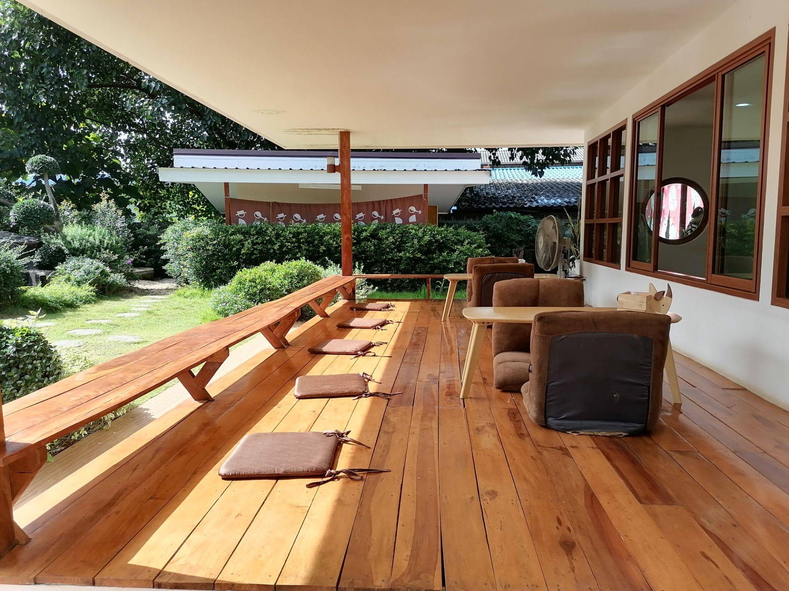

คาเฟ่ MeMo Mae Tha Lampang

ร้านนี้อยู่ไม่ไกลจากอำเภอเมือง เรียกว่าติดขอบเมืองก็ว่าได้ ร้านเข้ามาลึกจนแปลกใจเลยทีเดียว จอดรถบริเวณหน้าร้านครับริมถนน ทางร้านจะเตรียมกั้นไว้ให้เรียบร้อยแล้ว ก็จอดให้เป็นระเบียบนะครับเพราะว่าถนนด้านหน้านั้นมีความแคบอยู่พอสมควร เดินมาก็จะเจอเสาโทริโกะแบบญี่ปุ่น เป็นประตูทางเข้าร้าน บรรยากาศสวยแนวญี่ปุ่นเลยครับ มีสะพานแดงและสระน้ำ ร้านมีทั้งนั่งในตัวอาคาร และในสวน เขาเข้ามาสั่งเครื่องดื่มในร้านครับ บรรยากาศภายในโทนสีเรียบง่าย ตู้สบายๆ
Back